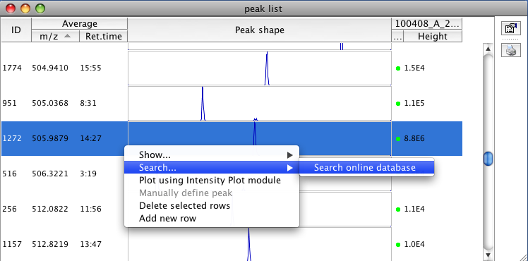

This module allows identification of peaks or whole peak lists using an on-line compound database. Databases are queried for the calculated neutral mass of the peak and matching compounds are returned.
Selection of peak for identification:

Results of database query:
Displaying the structure of the database compound:

Currently supported databases are listed below. Support for other databases may be implemented as addititonal plugins.
PubChem database (http://pubchem.ncbi.nlm.nih.gov/) contains millions of chemical compound structures.
KEGG database (http://www.genome.jp/kegg/) contains metabolites and other biomolecules present in natural metabolic pathways.
The Human Metabolome Database (HMDB) (http://www.hmdb.ca/) contains over 7,000 known metabolites found in human body.
The Yeast Metabolome Database (YMDB) (http://www.ymdb.ca) is a manually curated database of small molecule metabolites found in or produced by Saccharomyces cerevisiae (also known as Baker’s yeast and Brewer’s yeast).
The METLIN database (http://metlin.scripps.edu/) contains over 20,000 metabolites. To use METLIN, you need to obtain a security token by on-line registration.
The ChemSpider database (http://www.chemspider.com/) contains over 25 million compounds. To search ChemSpider you must provide the "Security Token" from your ChemSpider account. If you don't have an account, please register on-line. Log into your account and visit your user profile to obtain your token.
The Plant metabolic pathway database (http://plantcyc.org) provides access to manually curated or reviewed information about shared and unique metabolic pathways present in over 350 plant species.